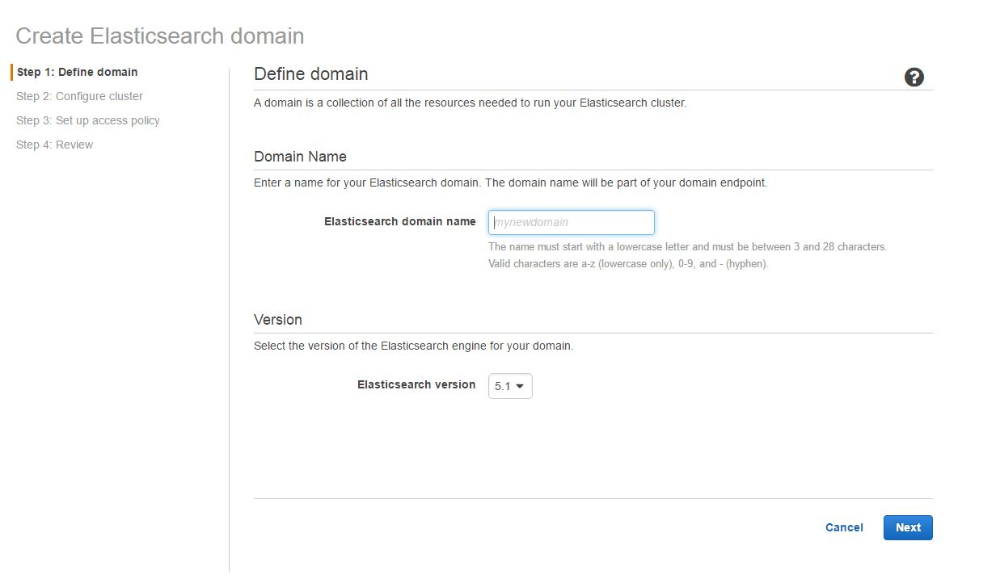
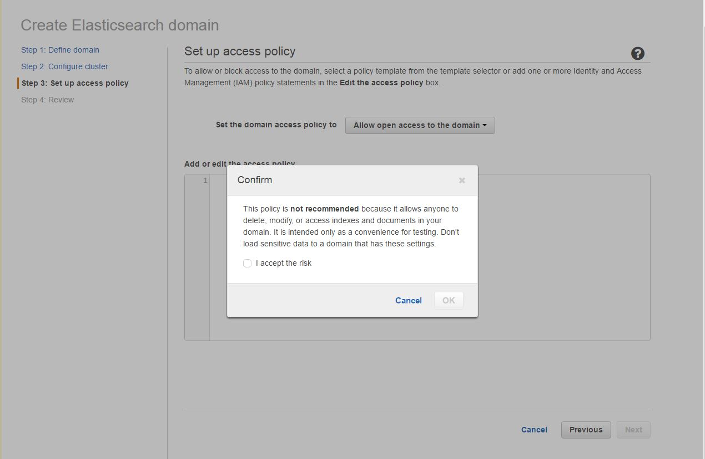
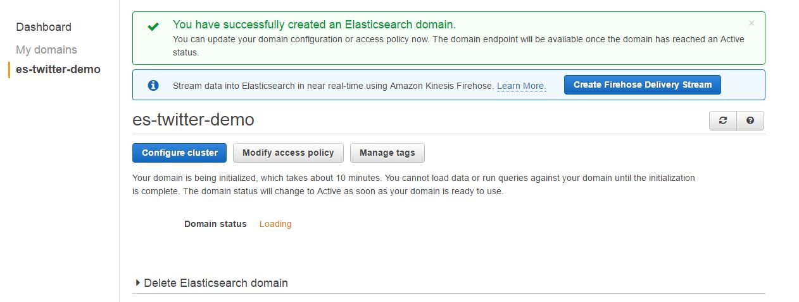
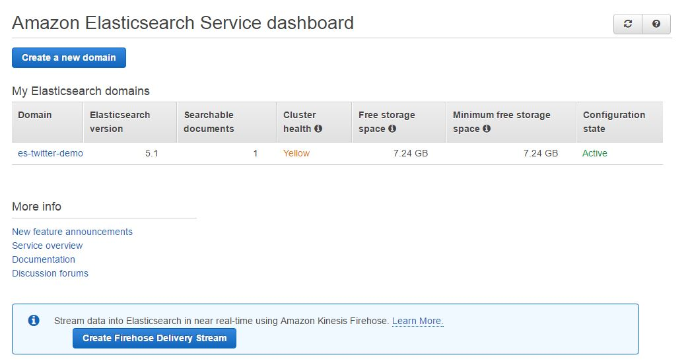
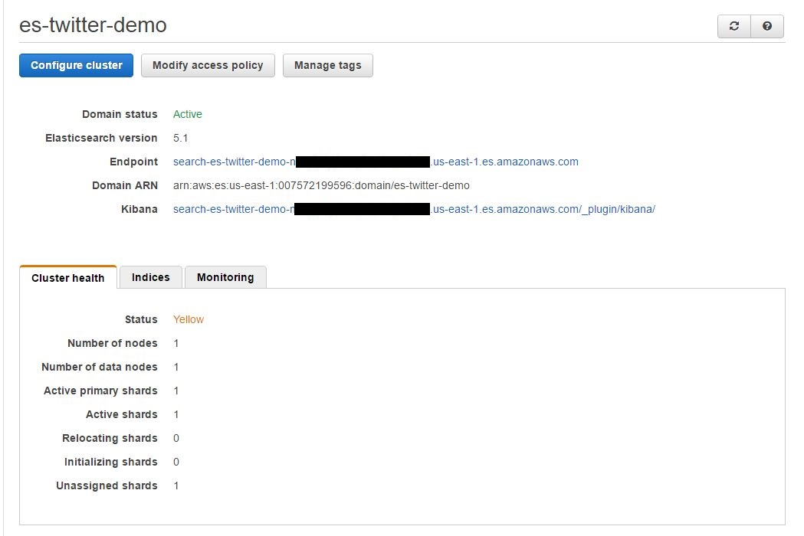

Notes on AWS's 'Building a Near Real Time Discovery Platform'
Assaf Mentzer from AWS put together a very useful learing project in November of 2015, 'Building a Near Real-Time Disovery Platform with AWS'.
Since then there seem to have been a few changes in some of the AWS services he used. This page updates Assaf's instructions and adds a few additional tips for anyone getting started with the project. These steps are fairly complete, but they are a suplement, and not a replacement, for Assaf's work. I hope it helps others with the demo.
Prerequisites
No real changes here. The only note is to consider using a new Twitter account instead of your usual one (if you have one) so as not to confuse your usual settings with these data explorations.
Create Amazon Elasticsearch Service cluster
- Sign in to the Elastic Search Service Console.
- If this is your first time choose 'Get Started', otherwise choose 'Create a New Domain'.

- Name your domain "es-twitter-demo" and choose 'Next'.
- After naming the domain for your elasticsearch service Assaf recommends accepting the defaults on the next page. The defaults are reasonable, but it is a bit cheaper to use a smaller EC instance to host the elasticsearch domain. The t2.medium.elasticsearch works well for simple experimentation.
- Choose 'Allow Open Access' as the domain policy.
NOTE: This is a poor security practice and the console will complain about it.

- Choose 'Confirm and Create'. It takes about 10 minutes for the domain to be set up.

- When the endpoint is active, click on it.

- The service console will display various details about the newly created service endpoint. Note this information down for later, especially the Eleasticsearch service endpoint and the Kibana URL.
